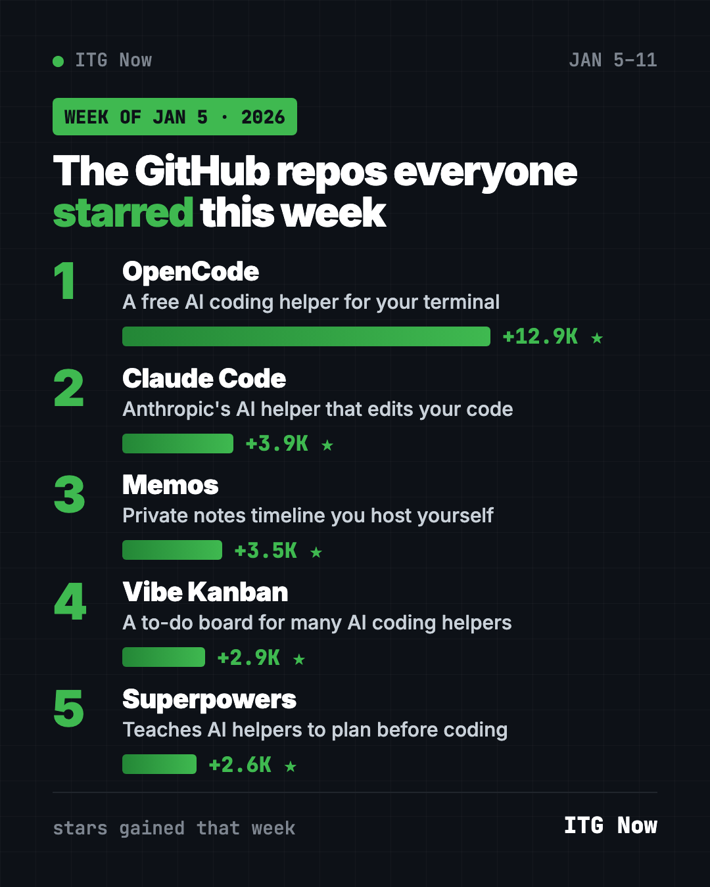

Home › Tools and repos › GitHub trending this week
Trending GitHub Repos, Week of January 5, 2026
- Published 15 Oct 2026
- Updated 16 Oct 2026
- 7 min read
- By the ITG Now team
In this guide (9)
- Key takeaways
- Trending GitHub repos week of January 5, 2026 at a glance
- 1. OpenCode: a free AI helper that writes code with you
- 2. Claude Code: Anthropic's coding helper in your terminal
- 3. Memos: a private notes timeline you own
- 4. Vibe Kanban: a to-do board for AI helpers
- 5. Superpowers: teach your AI helper to plan first
- Which one should you try first?
- FAQ
The trending GitHub repos week of January 5, 2026 were OpenCode, Claude Code, Memos, Vibe Kanban and Superpowers. Four of the five are AI helpers for writing code, and one is a private notes app you run yourself.
A GitHub star works like a bookmark. Below you get what each repo does, who should care, and the exact command to try it.
Key takeaways
- OpenCode led the week with about 12,900 new stars. It is a free, open source AI coding helper.
- Claude Code is Anthropic's coding helper. The download is free, but it runs on paid Claude plans.
- Memos is a private notes timeline you host on your own computer or server.
- Vibe Kanban has since announced it is winding down, so try it only out of curiosity.
- Superpowers teaches AI helpers to ask questions and plan before they write code.

Trending GitHub repos week of January 5, 2026 at a glance
| Rank | Repo | Stars gained | What it does | Free? |
|---|---|---|---|---|
| 1 | OpenCode | +12.9K | AI coding helper in your terminal | Yes (MIT) |
| 2 | Claude Code | +3.9K | Anthropic's AI coding helper | Free app, paid Claude plan |
| 3 | Memos | +3.5K | Private notes you host yourself | Yes (MIT) |
| 4 | Vibe Kanban | +2.9K | A task board for many AI helpers | Yes (Apache-2.0) |
| 5 | Superpowers | +2.6K | Good habits for AI coding helpers | Yes (MIT) |
Star gains are for January 5 to 11, 2026. Total star counts were checked on GitHub on October 16, 2026.
💡 Tip: A "terminal" is the plain text window where you type commands. On a Mac, open the app called Terminal. On Windows, open PowerShell. Paste a line, press Enter, wait.
1. OpenCode: a free AI helper that writes code with you
Stars: +12.9K this week · about 214K total today
What it is: OpenCode calls itself "the open source AI coding agent." You chat with it, and it reads, writes and fixes files in a project folder. It has two modes. "Build" can change things. "Plan" only reads and suggests, so nothing breaks while you look around.
Who it's for: Hobby builders, students and developers who want an AI coding helper without being locked into one company.
One everyday use: Point it at a messy folder of scripts and ask it to explain, in plain words, what each file does.
Install it: Copy and paste this (Mac or Linux):
curl -fsSL https://opencode.ai/install | bash
Or let Claude or Codex do it: Claude Code and OpenAI Codex are AI helpers that can run setup steps for you. Paste this:
Install OpenCode from https://github.com/anomalyco/opencode, start it in plan mode in this folder, and explain each file to me in plain words.
2. Claude Code: Anthropic's coding helper in your terminal
Stars: +3.9K this week · about 151K total today
What it is: Claude Code is Anthropic's AI helper for code. Its README says it understands your project, explains tricky code, runs routine tasks and handles git for you. You talk to it in normal sentences. The code on GitHub is not open source, and you need a Claude plan or API account to use it.
Who it's for: Anyone already paying for Claude who wants it to work inside their files, not just in a chat window.
One everyday use: Ask it to turn a spreadsheet export into a tidy summary report, then save it as a new file.
Install it: Copy and paste this on Mac or Linux:
curl -fsSL https://claude.ai/install.sh | bash
On Windows, paste this into PowerShell:
irm https://claude.ai/install.ps1 | iex
Then open your project folder and type claude.
Or let Codex do it:
Install Claude Code using the official script from https://github.com/anthropics/claude-code and tell me how to sign in.
3. Memos: a private notes timeline you own
Stars: +3.5K this week · about 64K total today
What it is: Memos is a timeline for quick notes. You write a thought without picking a title or folder. Later you find it by search, tag or date. New memos are private, and you choose what to share. The project says it has zero telemetry, meaning it does not report on you.
Who it's for: People who want a simple note app where their notes stay on their own machine.
One everyday use: Save recipe ideas and links all week, then find them by tag on Sunday.
Install it: First try the live demo. To run your own copy you need Docker, a free app that runs ready-made software. Then copy and paste this:
docker run -d \
--name memos \
-p 5230:5230 \
-v ~/.memos:/var/opt/memos \
neosmemo/memos:stable
Open http://localhost:5230 in your browser.
Install Docker if needed, then run Memos from https://github.com/usememos/memos with its Quick Start command and open it for me.
4. Vibe Kanban: a to-do board for AI helpers
Stars: +2.9K this week · about 28K total today
What it is: Vibe Kanban is a task board, like sticky notes in columns. Each card can go to an AI coding helper such as Claude Code, Codex or Gemini CLI. You then review the changes it made.
Who it's for: Developers juggling several AI helpers at once.
One everyday use: Write five small fixes as cards and let a helper work through them while you review each one.
Install it: Sign in to your AI coding helper first, then copy and paste this:
npx vibe-kanban
Start Vibe Kanban with "npx vibe-kanban" and show me how to send one task card to my coding helper.
⚠️ Heads up: The Vibe Kanban README now says the project is "sunsetting," which means it is winding down. Don't build your daily routine on it.
5. Superpowers: teach your AI helper to plan first
Stars: +2.6K this week · about 300K total today
What it is: Superpowers is a pack of "skills," which are instruction sets an AI helper follows. Before writing code, it asks what you are really trying to do. Then it shows you a plan in short chunks to approve.
Who it's for: Anyone using Claude Code, Codex or Cursor who is tired of the AI rushing ahead.
One everyday use: Describe a small website idea and let it ask you questions until the plan is clear.
Install it: Inside Claude Code, type this:
/plugin install superpowers@claude-plugins-official
Use Superpowers to help me plan a one-page site for my bakery. Ask me questions first.
See Superpowers on GitHub · Read our full Superpowers guide
Which one should you try first?
- Brand new to all this? Try Memos. The demo needs no setup at all.
- You want a free AI coding helper: start with OpenCode.
- You already pay for Claude: install Claude Code.
- Your AI helper keeps rushing: add Superpowers.
- You run many helpers at once: peek at Vibe Kanban, but know it is winding down.
FAQ
What were the top GitHub repos in the first full week of January 2026?
OpenCode, Claude Code, Memos, Vibe Kanban and Superpowers gained the most stars from January 5 to 11, 2026.
Is OpenCode free?
Yes. OpenCode is open source under the MIT license. The AI model you connect to it may cost money.
Is Claude Code free to use?
The download is free, but it is not open source. You need a paid Claude plan or API account to use it.
Is Vibe Kanban shutting down?
Its README says the project is sunsetting. You can still run it, but expect fewer updates.
For the bigger picture, see the best GitHub repos of January 2026 and January 2026 in AI. Next up: the trending repos of January 12.
Keep reading

Trending GitHub Repos October 2026: The Top 5 So Far
The trending GitHub repos of October 2026 so far: a free Photoshop-style editor, an AI art studio, a big AI model for gaming PCs and more, explained.

Trending GitHub Repos This Week, Oct 5 2026: The Top 5
Trending GitHub repos this week Oct 5 2026: Matt Pocock's skills, the openGym workout tracker, e2e testing, HyperFrames video and claude-mem memory.

GitHub Trending September 28, 2026: Hindsight and Paperclip
GitHub trending September 28 2026: Hindsight, Paperclip, NVIDIA's OpenShell and a free 542-lesson AI course, with setup steps for each.